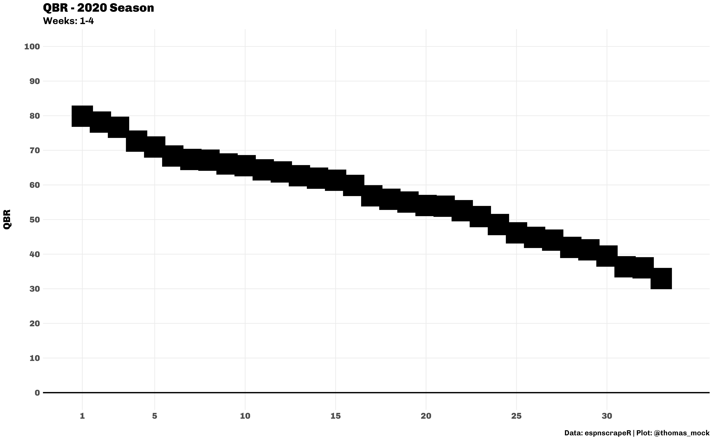

QBR Data
Well gather the QBR data through week 4 via espnscrapeR. Were also adapting a function from Emil Hvitfeldt to create <img> tags for use by ggtext down the line. His post has some good examples of rtweet + emoji analysis with ggtext embedded images.
# Get QBR data
qbr_data <- espnscrapeR::get_nfl_qbr(2020)
# Get NFL team data
team_data <- espnscrapeR::get_nfl_teams()
all_data <- qbr_data %>%
left_join(team_data, by = c("team" = "team_short_name"))
link_to_img <- function(x, width = 50) {
glue::glue("<img src='{x}' width='{width}'/>")
}
A quick bar plot of the ranked performance by each QB. Weve explicilty added colors for each players team, and already formatted it for a nice display with some theme changes.
Basic Plot Code
basic_plot <- all_data %>%
mutate(label = link_to_img(headshot_href),
rank = as.integer(rank)) %>%
ggplot() +
geom_col(
aes(
x = rank, y = qbr_total,
fill = team_color, color = alternate_color
),
width = 0.4
) +
scale_color_identity(aesthetics = c("fill", "color")) +
geom_hline(yintercept = 0, color = "black", size = 1) +
theme_minimal() +
scale_x_continuous(breaks = c(1, seq(5, 30, by = 5)), limits = c(0.5, 34)) +
scale_y_continuous(breaks = scales::pretty_breaks(n = 10)) +
labs(x = NULL,
y = "QBR\n",
title = "QBR - 2020 Season",
subtitle = "Weeks: 1-4",
caption = "<br>**Data:** espnscrapeR | **Plot:** @thomas_mock") +
theme(
text = element_text(family = "Chivo"),
panel.grid.minor = element_blank(),
plot.title = element_text(face = "bold", size = 20),
plot.subtitle = element_text(size = 16),
plot.caption = element_markdown(size = 12),
axis.text = element_text(size = 14, face = "bold"),
axis.title.y = element_text(size = 16, face = "bold")
)

Thats a fine plot, but unless were very knowledgeable about team colors you probably cant decide which player/team belongs to each column. Now, we could approach it a different way, and rather than plotting ranks we can flip the graph where QBR is on the X, and player name is on the Y, now explicitly sorting by rank.
Sideways Plot Code
side_plot <- all_data %>%
mutate(label = link_to_img(headshot_href),
rank = as.integer(rank)) %>%
ggplot() +
geom_col(
aes(
x = qbr_total, y = fct_reorder(name, qbr_total),
fill = team_color, color = alternate_color
),
width = 0.4
) +
scale_color_identity(aesthetics = c("fill", "color")) +
geom_vline(xintercept = 0, color = "black", size = 1) +
theme_minimal() +
scale_x_continuous(breaks = scales::pretty_breaks(n = 10)) +
labs(x = "\nQBR",
y = NULL,
title = "QBR - 2020 Season",
subtitle = "Weeks: 1-4",
caption = "<br>**Data:** espnscrapeR | **Plot:** @thomas_mock") +
theme(
text = element_text(family = "Chivo"),
panel.grid.minor = element_blank(),
panel.grid.major.y = element_blank(),
plot.title = element_text(face = "bold", size = 20),
plot.subtitle = element_text(size = 16),
plot.caption = element_markdown(size = 12),
axis.text = element_text(size = 14, face = "bold"),
axis.title.x = element_text(size = 16, face = "bold"),
axis.text.y = element_text(margin = margin(r = -25, unit = "pt")),
axis.ticks.y = element_blank()
)

Again thats a useful plot, but we often want to include some more pizzazz by including team logos or player headshots. Below well cover a few of the ways to do this, and some of the barriers or pain points well run into along the way!
ggimage
First we have ggimage + end of column labels. I also want to note that Im explicitly showing the code here, and using tictoc to display how long saving these images will take. In general, displaying embedded images is a bit slower than an equivalent basic ggplot. Since I want to show what the images will look like after export, Im also using knitr::include_graphics() to include the actual exported PNG in this RMarkdown-based website. Ive also included tictoc for how long each code-section took to save so you can see that each method is about 5-8 seconds.
NOTE: I realise this graphic is distorted, its an intentional display of a problem you may run into
tic()
qb_col_img <- basic_plot +
geom_image(
aes(
x = rank, y = qbr_total,
image = headshot_href
)
)
# Not displaying the image directly,
# but reading in the exported img after
# qb_col_img
# saving it as a rectangle
ggsave(
"qbr-ggimage.png", qb_col_img,
height = 10, width = 16, dpi = "retina"
)
toc()
9.236 sec elapsed
Youll notice that since we have a rectangle-shaped graph, the images have been distorted to be wider than they should. Now if you want the images to come out without being distorted, you need to specify the specific aspect ratio youre using. Just in case you havent heard of an aspect ratio, Ill also provide a definition as the ratio of width to height.
ggimage and Aspect Ratio
Note that geom_image() has the following parameters:
geom_image(
mapping = NULL,
data = NULL,
stat = "identity",
position = "identity",
inherit.aes = TRUE,
na.rm = FALSE,
by = "width",
nudge_x = 0,
...
)There isnt an explicit option for aspect ratio, but it exists as asp. So if we consider ahead of time the dimensions of the plot we want to make, we can define the aspect ratio at the plot level and at the ggsave level. Per some experiments on Windows specifically, we also need to include aspect ratio in the theme() call as well, and make sure this again aligns with your ggsave() call.
# Define an aspect ratio to use throughout
# This value is the golden ratio
# which provides a wider than tall rectangle
asp_ratio <- 1.618
tic()
qb_col_img_asp <- basic_plot +
# note we can also control the size of the image according to it's width
geom_image(
aes(
x = rank, y = qbr_total,
image = headshot_href
),
# Set size, and aspect ratio
size = 0.05, by = "width", asp = asp_ratio
) +
# Second step
theme(aspect.ratio = 1/asp_ratio)
# include aspect ratio in ggsave
ggsave(
"qbr-img-asp.png", qb_col_img_asp,
# make the width equivalent to the aspect.ratio
height = 10, width = 10 * asp_ratio, dpi = "retina"
)
toc()
7.453 sec elapsed
While this may seem like a bit of work, its a good habit to think explicitly about what size or ratio you want to save your plots out as (it can inform how big to make your text amongst other things).
However, theres an even easier way thanks to ggtext!
ggtext + column end labels.
Next we have ggtext + column labels. Here ggtext::geom_richtext() handles the proper scaling of the image without really any intervention from us! While geom_richtext() is very useful were sort of using it out of its normal context. The overall purpose of ggtext is to provide improved text rendering support for ggplot2. The ggtext site has all the capabilities and function details. In short, ggtext provides a limited subset of markdown/HTML/CSS syntax as an interface to changing text in ggplot2.
Thus, to achieve our goal of embedding images, we can create an img HTML tag to embed an image rather than just format text. Note that again, while this looks like a HTML call it works anywhere you want to use ggplot2. Credit to Emil Hvitfeldt for the idea of using an img tag and the function were adapting to embed images.
# Don't forget, we already created an img label column with HTML
link_to_img <- function(x, width = 50) {
glue::glue("<img src='{x}' width='{width}'/>")
}
tic()
qb_col_text <- basic_plot +
geom_richtext(
aes(x = rank, y = qbr_total, label = label),
size = 1,
fill = NA, label.color = NA, # remove background and outline
label.padding = grid::unit(rep(0, 4), "pt") # remove padding
)
ggsave("qbr-ggtext.png", qb_col_text, height = 10, width = 10 * asp_ratio, dpi = "retina")
toc()
9.673 sec elapsed
ggtext + Axis Labels
Now we could also change the images on the x-axis w/ the code below, and note that were mainly taking the same code, but changing the core aes() call to have x = label and axis.text.x = ggtext::element_markdown() - full details shown below.
# Here are the parts we're changing
# change x-axis to be the label we've created
aes(x = fct_reorder(label, qbr_total, .desc = TRUE))
# and changing the theme to include element_markdown()
theme(
axis.ticks.x = element_blank(),
# add element_markdown to axis.text.x
# this will parse the labels to add img
axis.text.x = element_markdown(margin = margin(t = -25, unit = "pt"))
)
Heres the full code of the call with again some highlighted portions where weve changed code.
tic()
axis_plot <- all_data %>%
mutate(label = link_to_img(headshot_href),
rank = as.integer(rank)) %>%
ggplot() +
geom_col(
aes(
## CHANGE IS HERE ##
# apply label to x axis labels
x = fct_reorder(label, qbr_total, .desc = TRUE),
y = qbr_total,
fill = team_color, color = alternate_color
),
width = 0.4
) +
scale_color_identity(aesthetics = c("fill", "color")) +
geom_hline(yintercept = 0, color = "black", size = 1) +
theme_minimal() +
scale_y_continuous(breaks = scales::pretty_breaks(n = 10)) +
labs(x = NULL,
y = "QBR\n",
title = "QBR - 2020 Season",
subtitle = "Weeks: 1-4",
caption = "<br>**Data:** espnscrapeR | **Plot:** @thomas_mock") +
theme(
text = element_text(family = "Chivo"),
panel.grid.minor = element_blank(),
panel.grid.major.x = element_blank(),
plot.title = element_text(face = "bold", size = 20),
plot.subtitle = element_text(size = 16),
plot.caption = element_markdown(size = 12),
axis.text = element_text(size = 14, face = "bold"),
axis.title.y = element_text(size = 16, face = "bold")
) +
theme(
axis.ticks.x = element_blank(),
# add element_markdown to axis.text.x
# this will parse the labels to add img
# we're also decreasing the margin so that the logos/heads are close
# to the columns
axis.text.x = element_markdown(margin = margin(t = -25, unit = "pt"))
)
# axis_plot
ggsave(
"qbr-axis-img.png", axis_plot,
height = 10, width = 10 * asp_ratio, dpi = "retina"
)
toc()
9.4 sec elapsed
ggtext Negatives
OK wow, so why not just use ggtext all the time!?
Cons:
- It WAS verrrrrrry slow to draw in the RStudio plot-viewer, like on the order of a few minutes with 33 embedded images, however it would still save to
pngin a few seconds- The latest version (
ggtext_0.1.0.9000) fromGitHubdoes draw in a few seconds though!
- The latest version (
- Cant adjust size in
ggplot- has to be done ahead of time w/ HTML syntax in our custom function
Im fine with these tradeoffs especially as the newer version is fast, and you dont have to worry about the scaling.
Latest version of ggtext can be installed via remotes::install_github("wilkelab/ggtext").
What about a table?
So a slight hot-take is that since were showing values that were inherently asking people to look up and compare individual values (ie find your QB of interest vs the field), this should be a table!
Per Stephen Few:
Tables: Display used to look up and compare individual values.
Graph: Used to display the relationship among whole sets of values and their overall shape.
Now sure, were showing a shape of the graphic, but really this is a way to show how far ahead (or behind) one player is behind another which is comparing individual values. That being said, I think its totally fine to use this a graphic, its attractive, people seem to enjoy them, and everyone has the free will to make their own graph/table decisions!
Below is an example of a table that occupies roughly the same space, tells the same story, uses the same headshots, but also adds more data in QB run vs pass EPA splits along with total plays.
Table Data + Function
tab_data <- all_data %>%
mutate(RK = rank(desc(qbr_total)),
RK = as.integer(RK)) %>%
select(RK, name, headshot_href, qbr_total, qb_plays, pass, run)
tab_function <- function(data, ...){
data %>%
gt() %>%
text_transform(
locations = cells_body(vars(headshot_href)),
fn = function(x){
web_image(
url = x,
height = px(30)
)
}
) %>%
cols_label(
headshot_href = "",
name = "Name",
qbr_total = "QBR",
qb_plays = "Plays",
run = "Run",
pass = "Pass"
) %>%
data_color(
columns = vars(qbr_total),
colors = scales::col_numeric(
palette = c("#af8dc3", "#f7f7f7", "#7fbf7b"),
domain = c(25, 100)
)
) %>%
tab_style(
style = cell_text(weight = "bold"),
locations = cells_body(
columns = vars(RK, name)
)
) %>%
tab_options(
column_labels.background.color = "white",
column_labels.font.weight = "bold",
table.border.top.width = px(3),
table.border.top.color = "transparent",
table.border.bottom.color = "transparent",
table.border.bottom.width = px(3),
column_labels.border.top.width = px(3),
column_labels.border.top.color = "transparent",
column_labels.border.bottom.width = px(3),
column_labels.border.bottom.color = "black",
data_row.padding = px(3),
source_notes.font.size = 12,
table.font.size = 16,
heading.align = "left",
...
) %>%
opt_table_font(
font = list(
google_font("Chivo"),
default_fonts()
)
)
}
The code uses the function defined in the above expandable section, and to get the side-by-side format I decided to save the tables as PNG and then combine with magick::image_append().
img1 <- magick::image_read("gt-tab1.png")
img2 <- magick::image_read("gt-tab2.png")
magick::image_append(c(img1, img2))

The equivalent plot that displays:
- Run EPA
- Pass EPA
- QBR
- Player name
Weve also loaded the ggrepel package to add labels. This graphic is getting a bit busy at this point but is still useful. Given that were trying to display 4 measures we have had to rely on size for run EPA which adds additional overhead to the understanding of this graphic as well.
library(ggrepel)
scatter_plot <- all_data %>%
mutate(label = link_to_img(headshot_href),
rank = as.integer(rank)) %>%
ggplot() +
geom_smooth(aes(x = pass, y = qbr_total), method = "lm", color = "grey") +
ggrepel::geom_text_repel(
aes(x = pass, y = qbr_total, label = last_name),
box.padding = 0.5, fontface = "bold", size = 6
) +
geom_point(
aes(x = pass, y = qbr_total, size = run, fill = team_color, color = alternate_color),
shape = 21
) +
scale_color_identity(aesthetics = c("fill", "color")) +
scale_size(name = "Run EPA") +
theme_minimal() +
scale_x_continuous(breaks = scales::pretty_breaks(n = 10)) +
scale_y_continuous(breaks = scales::pretty_breaks(n = 10), limits = c(0, 100)) +
labs(x = "\nPass Expected Points Added",
y = "QBR\n",
title = "QBR - 2020 Season",
subtitle = "Weeks: 1-4\nNote that Pass EPA is predictive of QBR",
caption = "<br>**Data:** espnscrapeR | **Plot:** @thomas_mock") +
theme(
text = element_text(family = "Chivo"),
panel.grid.minor = element_blank(),
plot.title = element_text(face = "bold", size = 20),
plot.subtitle = element_text(size = 16),
plot.caption = element_markdown(size = 12),
axis.text = element_text(size = 14, face = "bold"),
axis.title = element_text(size = 16, face = "bold"),
legend.position = c(0.1,0.85),
legend.background = element_rect(fill = "lightgrey"),
legend.title = element_text(size = 12, face = "bold"),
legend.text = element_text(size = 10)
)
scatter_plot

Team Logos
Team logos work just as well, and are arguably a bit easier to parse than player headshots. The strategies are all the same, but just want to show team-logos from nflfastR as well!
Team Logo Code
tic()
qb_col_logo <- all_data %>%
mutate(team = if_else(team == "WSH", "WAS", team)) %>%
left_join(
nflfastR::teams_colors_logos %>% select(team = team_abbr, team_logo_espn),
by = c("team")
) %>%
mutate(label = link_to_img(team_logo_espn, width = 35),
rank = as.integer(rank)) %>%
ggplot() +
geom_col(
aes(
x = rank, y = qbr_total,
fill = team_color, color = alternate_color
),
width = 0.4
) +
geom_richtext(
aes(x = rank, y = qbr_total, label = label),
size = 1,
fill = NA, label.color = NA, # remove background and outline
label.padding = grid::unit(rep(0, 4), "pt") # remove padding
) +
scale_color_identity(aesthetics = c("fill", "color")) +
geom_hline(yintercept = 0, color = "black", size = 1) +
theme_minimal() +
scale_x_continuous(breaks = c(1, seq(5, 30, by = 5)), limits = c(0.5, 34)) +
scale_y_continuous(breaks = scales::pretty_breaks(n = 10)) +
labs(x = NULL,
y = "QBR\n",
title = "QBR - 2020 Season",
subtitle = "Weeks: 1-4",
caption = "<br>**Data:** espnscrapeR | **Plot:** @thomas_mock") +
theme(
text = element_text(family = "Chivo"),
panel.grid.minor = element_blank(),
plot.title = element_text(face = "bold", size = 20),
plot.subtitle = element_text(size = 16),
plot.caption = element_markdown(size = 12),
axis.text = element_text(size = 14, face = "bold"),
axis.title.y = element_text(size = 16, face = "bold")
)
ggsave("qbr-logo-ggtext.png", qb_col_logo, height = 10, width = 10 * asp_ratio, dpi = "retina")
toc()
7.977 sec elapsed